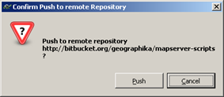

A 10 Minute Intro on using BitBucket with Windows
- date:
2010-06-09 13:38
- author:
admin
- category:
programming
- tags:
bitbucket, sourcecontrol
- slug:
a-10-minute-intro-on-using-bitbucket-with-windows
- status:
published
There are already a couple of official quick start guides to using Mercurial’s Window’s client program TortoiseHG, but below are the bare details of how to use it with a new account on the BitBucket service.
1. Create a new account on http://bitbucket.org/. Then create a new repository for your code.

2. Download the TortoiseHG program for Windows from http://tortoisehg.bitbucket.org/. Install and reboot. This will add context commands to Windows Explorer.
3. Right-click on a folder in Windows Explorer that contains the code files or scripts you want to add to your BitBucket account, and select “Create Repository Here” from the context menu.
4. Next right-click in the folder and select “Add Files.” You can now check which files in the folder you wish to add to BitBucket, and click the “Add” button.
5. Right-click again in the folder and select “Hg Commit.” The screen below should appear. You can enter a text description for the update (“add tilecache script” in the image below). Once you’ve done this click the “Commit” button in the toolbar.
6. Right-click again in the folder and select “Hg Repository Explorer.” Add the name of your BitBucket repository to the address bar as shown below. In this case my repository is http://bitbucket.org/geographika/mapserver-scripts ?” yours should be in a similar format.
In the menu select “Synchronize” and then “Push”
8. You should be presented with a confirmation dialog as below. You will be asked for your username and password for BitBucket (step 1). That’s it! You can then check your code online, and learn the rest at your own pace! Let me know if you’ve posted anything good in the comments below!
- orphan:
Comments
1. James Fee GIS Blog » Blog Archive » In defense of VBA **
[…] to be a large percentage of ESRI developers that still rely on VBA to customize ArcGIS Desktop. geoGraphika has even written a blog post outlining 7 reasons why ESRI shouldn’t drop […]
Reply2. Kevin Dunlop **
How about an 8th:
8. VBA apps can be run without requiring an install. Many organization limit what users can install on their computers yet rarely limit VBA. While a .NET may not be allowed, a VBA is.
Reply3. Michalis Avraam **
Indeed, but VBA is no longer being licensed by Microsoft to 3rd parties (as of 2007), and all development has since stopped as well. There are many security holes and issues with it, and I think ESRi is doing well to phase it out. The 2+ years people have of warning about this should be plenty for people to migrate to something else (Python with the new functionality of 9.4?).
Reply4. Nico **
Do not take me wrong but:
are tools to do this. | 2. A setup doesn’t need to be “heavy” , in fact it is as lean as VBA. | 3. I agree, if you don’t need anything different to what a sample provides it’s ok to with it. As you stated it’s easy for someone with no programming experience. | 4. I agree | 5. I agree | 6. I agree partially , if you were always to held the same position this can help, I’m not sure about people out there, but since I have moved a lot I do not rely on this knowledge to help/keep me a job. | 7. I don’t really get the point, I’m no native English speaker,but I don’t think anyone’s recommending C# over Vb.Net, | this is just about deprecating VBA. | 8. I don’t know if that’s possible | 9. Yes that would be great, not sure if possible
VB6 ,I moved to PL/SQL and SQL, then Java, then C#, | then shell scripting (Solaris,Linux,AIX).This has always occurred within GIS environments, there are some more GIS offerings besides ESRI ( though I currently work in an ESRI based project)
Do not rely in one language to do your day to day work, this can easily change. Just get the roots and you’ll be prepared for every language.
Reply5. admin **
Visual Studio, how to add in the ESRI tools to this, and then be confronted with a whole load of pregenerated code which would look like nonsense to any non-developer. | A set up could be very simple, but again it takes time and effort on the developer’s part to create custom installer classes and set up packages. | I agree that a developer should not fear the death of VBA from ArcGIS, but for advanced GIS users who are probably more numerous in various civil service jobs, it removes the chance of automating daily tasks themselves.
Reply6. SeaJunk **
python parser in the field calculator.
Reply7. Dave Miller **
The dropping of support for VBA gives rise to a big question for what I would call the “non-programmer GIS community”. That is those of us who have learned GIS and picked up a bit of VBA along the way (for customisation, labelling expressions, field calculator expressions etc.) without being fully-blown programmers.
That question is what should we use now?. Clearly VBA is on the way out, and ESRI have given us a good head’s up that support for it will be dropped if we hadn’t already figured that out from Microsoft’s decision not to continue development. Can Python do everything that VBA could do? If not, should we channel our efforts in other directions?
Dave
Reply8. Tom Magdaleno **
Seriously though, I am not a programmer and frankly I do not want to be one. I get the feeling that the future of GIS will mean you have to know programming languages. All these languages have a nasty habit of becoming obsolete every few years. | The attitude of most programmers is | “Learn how to program and then programing for GIS will be easy.” | thats like saying “Learn calculus for a job that only requires adding fractions.” I hope ESRI continues to be helpful in letting users share code to keep it simple.
Reply9. Bog **
I am bummed. Mostly because I am foggy on ESRI’s direction after this. Looks like they are pretty tight with Microsoft now (Silverlight, etc), so whatever way MS goes, ESRI will follow no doubt. Python is pretty prevalent in ArcGIS, but as someone mentioned - not exactly hooked into the interface and all that ArcObjects have to offer. If they develop an API for Python that bridges the gap, then all is not lost. I have several MXD-based VBA apps that will have to be updated (many planned for .Net anyway), but the quick result macro functionality of VBA will be missed. Yes, Avenue was a good analogy in seeing code work or not work immediately without having to go into a compiling environment like Studio. Perhaps 9.4 will be the last version many use for a long time (even if on maintenance) like those still using Win 2K out there (as discovered in James Fee blog), Some on 8.X, and probably even those still using AV 3.2!
Reply10. Duncan Hornby **
Hi all,
I’m somewhat perturbed by the future of VBA. I’ve written some very large and successful projects entirely within the MXD and will be very concerned about the demise of VBA, mainly because some clients I have developed for have such a ridiculous IT policy that despite them asking for a tool their IT department won’t allow the installation of DLLs which is what .Net creates. I cannot create an extension, a command buton, or a GP function tool because they are all DLLs that you have to install and don’t get me on my soap box about administrative rights…
None of this is an issue with VBA. So I agree with the blog that if they want VB .Net, fine but for God sake don’t drop the ability to store code and customisation within an MXD.
I really hope someone from ESRI is reading this…
Reply11. Rinke **
in MXD. | Made possible by the ARIS .Net Scripting Tool for ArcMap: | http://www.aris.nl/dotnetscripting_arcmap
ArcMap. | No Visual Studio license required.
Reply12. Andrew **
Why just don’t continue to use older version of ArcGIS which support VBA and all stuff writen on it for old projects? Not only ESRI refuse from VBA, Autodesk, for example did the same thing. Microsoft stoped supporting VBA and others did the same. But this tool (I mean VBA) is very good to refuse from it. Understand that newer versions of softwsre have some advantages, but for most users they are not so important. For example our company stoped at AutoCAD 2007, MS Office 2003 and ArcGIS 9.1 and uses them all with VBA.
ReplyAdd Comment